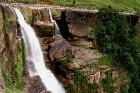
Umiam Lake (Barapani)
Scenic lake offering boating and water sports

Scenic lake offering boating and water sports
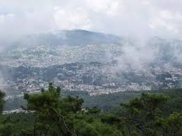
Highest point in Shillong with panoramic views
Three-tiered waterfall near Shillong
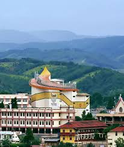
Museum showcasing the cultural heritage of Northeast India
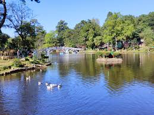
Picturesque lake with boating facilities and garden
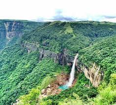
Tallest plunge waterfall in India
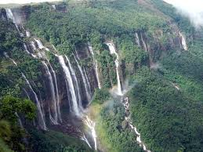
Seven segmented waterfall
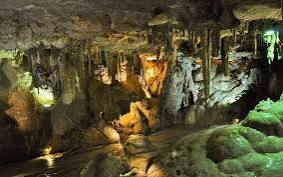
Limestone caves near Cherrapunji
Unique bridges made from living tree roots
Wettest place on Earth
Crystal clear river on the India-Bangladesh border
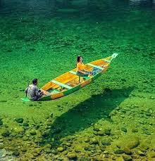
Hill station known for its lakes and waterfalls
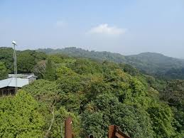
Gateway to Nokrek National Park and Balpakram National Park
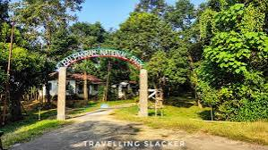
Known for its rich biodiversity and scenic beauty
Artificial lake with boating and water sports

Annual festival celebrating harvest and culture
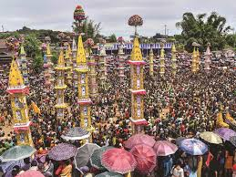
Festival of the Jaintia community, marked by traditional dances and rituals
Opportunities in various hills and valleys
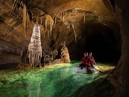
Exploration of limestone caves like Mawsmai and Siju